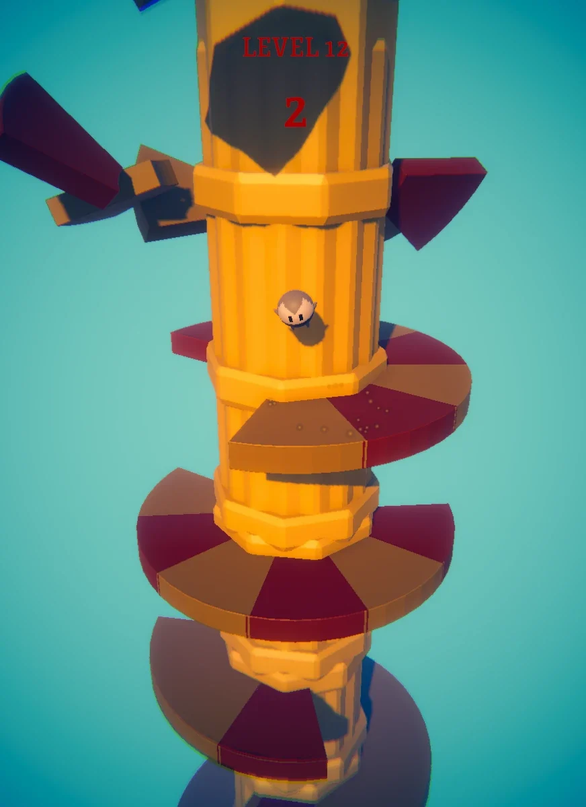
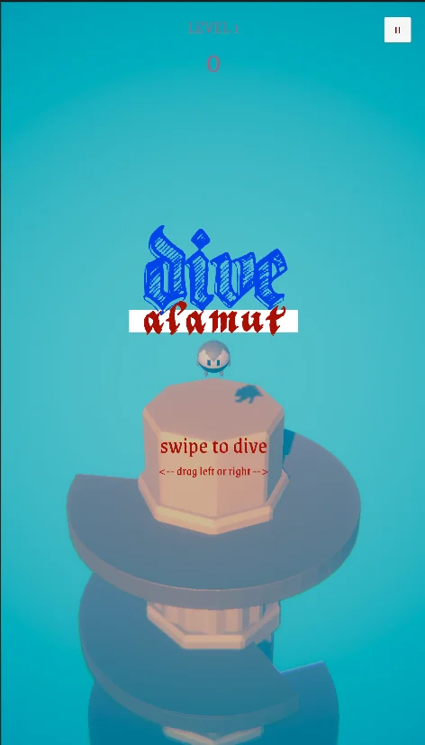
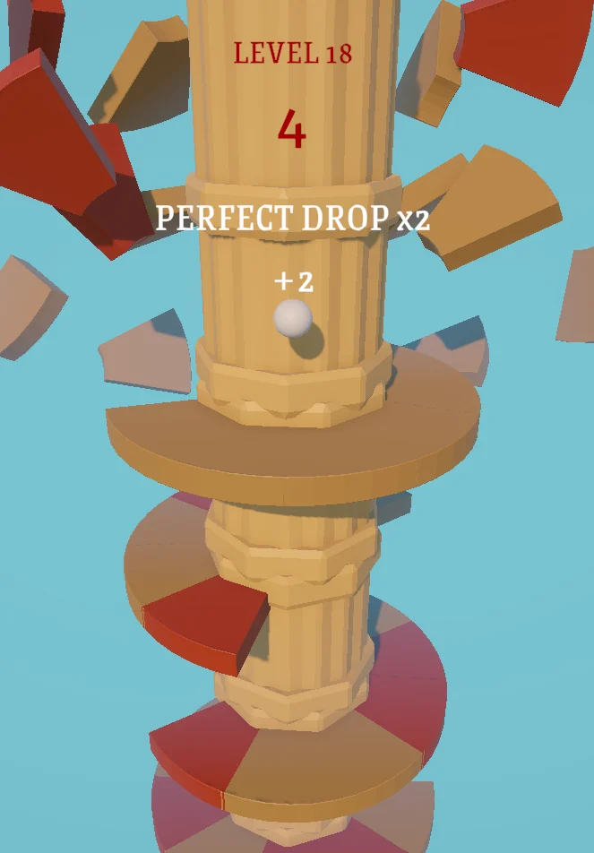
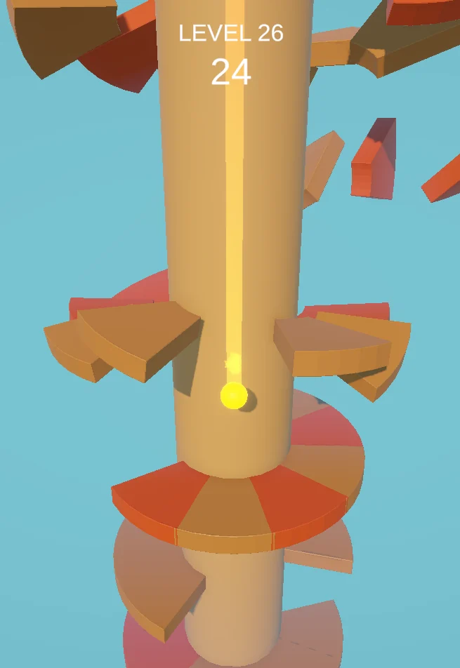
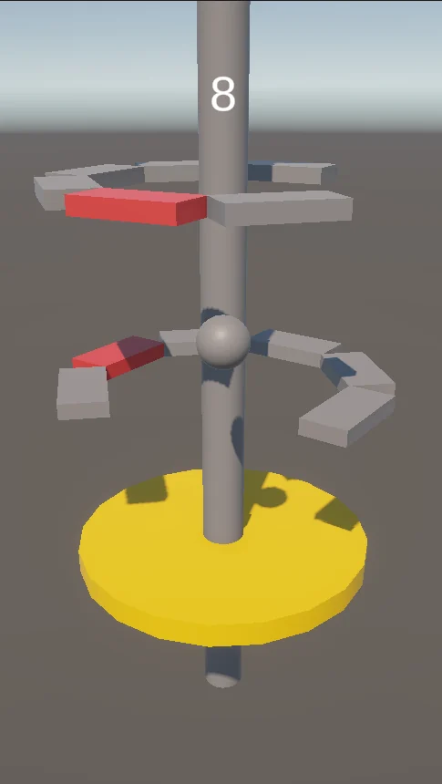
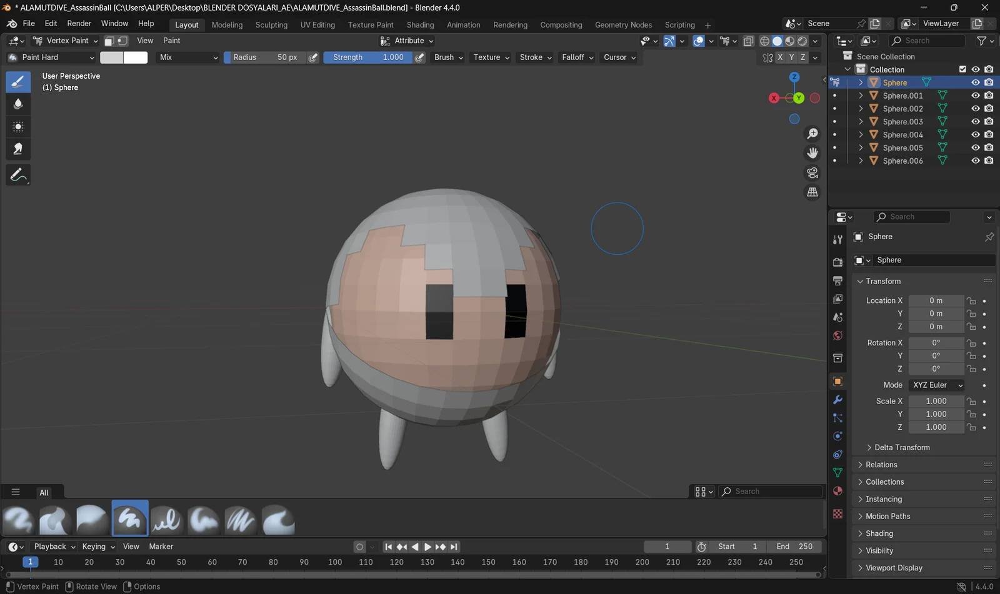

platform ve düşüş
- Helix Jump tarzı dönen platform yapısı
- Güvenli ve tehlikeli segment ayrımı
- Bounce ve collision davranışları
- Ardışık başarılı düşüş akışı
Kuleyi döndür, boşluğu bul, aşağı dal. Yeterince hız topladığında Smash Mode açılıyor ve tehlikeli platformlar bir süreliğine senin değil, onların sorunu oluyor.

Upperpik'teki stajımda yaptığım ilk mobil hypercasual oyun. Helix Jump tarzı dönen kule ve düşüş mekaniğini aldım; renkli şeker kulesi görünümü yerine Alamut kalesine ve Haşhaşi temasına taşıdım. Aşağı süzülen bir suikastçıyı güvenli boşluklardan geçiriyorsun; yanlış segmente değdiğin an suikast iptal.
Temel oyun döngüsünü kurdum; fizik ve çarpışma davranışlarını, oyun durumlarını, mobil dokunmatik kontrolleri ve farklı ekranlara uyan arayüzü yazdım. Sonra kısa sürede oynanabilir hale gelen prototipi parlattım: suikastçı karakteri, temaya uygun platformlar, ses ve particle efektleriyle her düşüşün okunaklı ve tatmin edici hissettirmesine uğraştım.
WaitingToStart / Playing / GameOver / LevelComplete
Input, fizik, arayüz ve sonuç ekranları sadece doğru oyun durumundayken çalışıyor. Yani düşmüş bir suikastçı ekrana dokununca tekrar zıplayamıyor.
Klasik renkli hypercasual kule yerine suikastçı karakter modeli ve temaya uygun platform görselleri kullandım.
Arayüzü farklı ekran oranlarına göre düzenledim; kamera, kadraj ve UI'ı hem PC görünümünde hem mobil build'de test ettim.
DiveAlamut bana oyunun omurgasını öğretti: core gameplay, çarpışma, oyun durumları ve mobil kontrol. Kısa sürede çalışan bir prototipi ses, efekt, karakter ve temayla gerçekten oynanan bir mobil oyuna çevirmeyi de burada denedim.
Kuleden aşağı dalan küçük bir suikastçi top. Önce oyunun son hali, sonra erken bir sürüm, gri bloklu ilk prototip ve topun Blender'daki hali. Görsellere tıklayınca büyüyor.




